Wildpflanzen
Bestimmung
Register
Systematik
Besucher
<
Weisse, bis vier Blütenblätter
>
Weisse, bis vier Blütenblätter
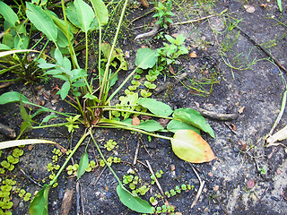
Gewöhnlicher Froschlöffel / Alisma Plantago aquatica
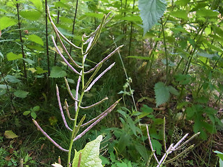
Knoblauchsrauke / Alliaria Petiolata
Sand Schaumkresse / Arabidopsis Arenosa
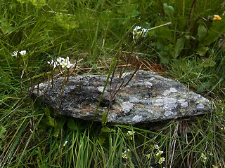
Alpen Gänsekresse / Arabis Alpina
Meerrettich / Armoracia Rusticana
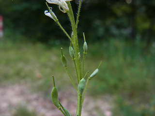
Graukresse / Berteroa Incana
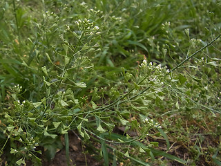
Gewöhnliches Hirtentäschel / Capsella Bursa-pastoris
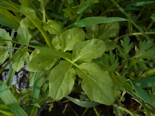
Bitteres Schaumkraut / Cardamine Amara
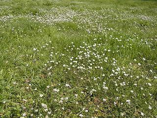
Behaartes Schaumkraut / Cardamine Hirsuta
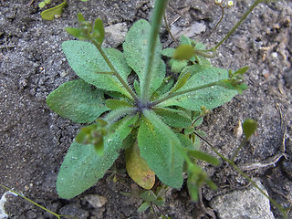
Frühes Hungerblümchen / Draba Praecox
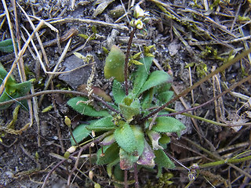
Frühlings Hungerblümchen / Draba Verna
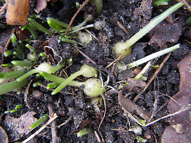
Kleines Schneeglöckchen / Galanthus Nivalis
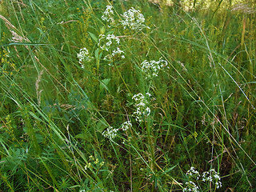
Weiβes Labkraut / Galium Album
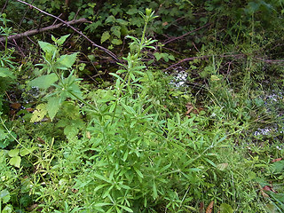
Kletten Labkraut / Galium Aparine
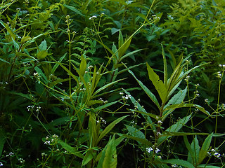
Sumpf Labkraut / Galium Palustre
Rundblättrige Labkraut / Galium Rotundifolium
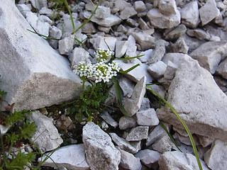
Kalk Gämskresse, alpen- gämskresse / Hornungia Alpina ssp. alpina
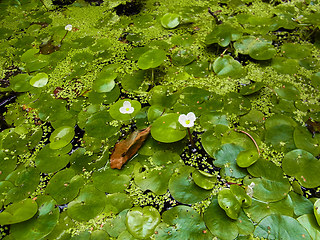
Europäische Froschbiss / Hydrocharis Morsus-ranae
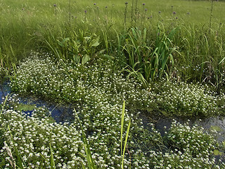
Echte Brunnenkresse / Nasturtium Officinale
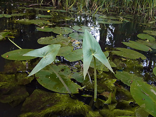
Gewöhnliches Pfeilkraut / Sagittaria Sagittifolia
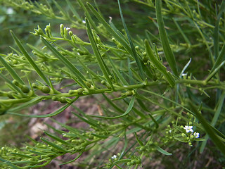
Alpen Leinblatt / Thesium Alpinum
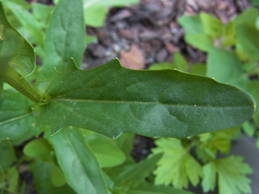
Acker Hellerkraut / Thlaspi Arvense
nach oben